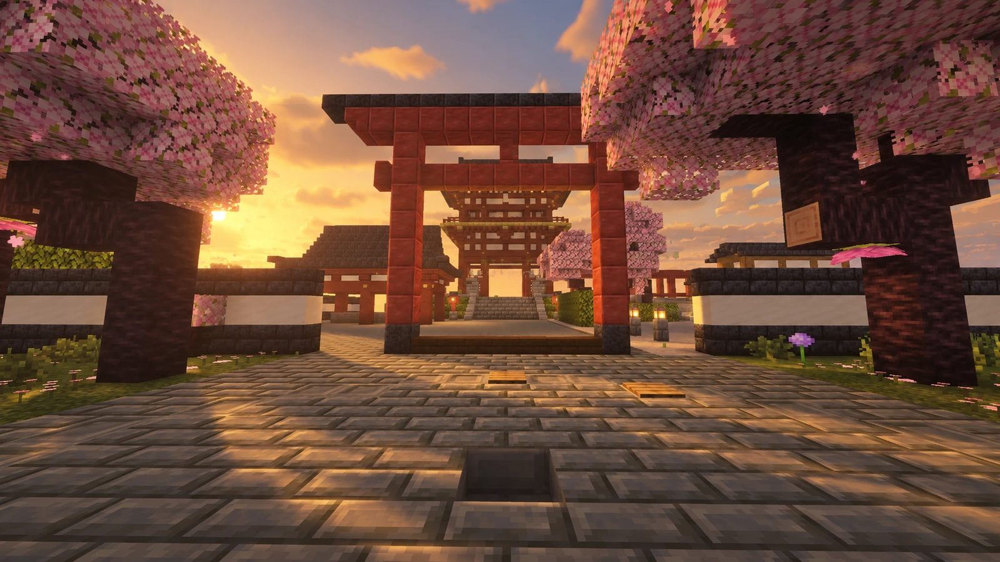

サバイバル
バニラに近い感覚で、採掘・農業・漁業・建築を楽しめます。集めたアイテムはプレイヤー市場や自動販売機で売りに出せます。

実りを育て、市場を動かし、街をつくる。
集めた資源をプレイヤー同士で売買し、仲間と会社を興し、自治体で暮らす。プレイヤーの取引で経済が動くサーバーです。
写真：サーバーのHub（ロビー）
4つの要素が重なり合い、ひとつの経済圏をつくります。
バニラに近い感覚で、採掘・農業・漁業・建築を楽しめます。集めたアイテムはプレイヤー市場や自動販売機で売りに出せます。
売買はプレイヤー同士の市場で行います。価格は出品数と購入数に応じて変わり、相場はこのサイトでも確認できます。
仲間と会社を設立し、売上と社員数の条件を満たすとランクアップ。ランク2以上で上場でき、株を売買できます。
村をつくり、住民と領域を増やして町・市へ発展させます。税率は自治体ごとに設定できます。
相場や会社の動きを、ログインしていなくても確認できます。
読み込み中…
参加方法とルールを確認して、さっそく始めましょう。